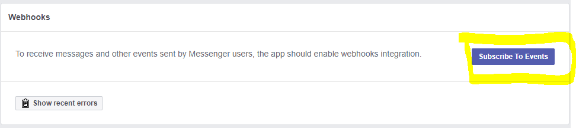

Facebook Messenger configuration
Here you will find instructions to configure an environment with Facebook and then use it through the Chatbots Channels API. Create a Facebook PageTo create a page on Facebook, go through this link. Continue the configuration process, where you are asked for a profile picture and other information. After the page is created, select the "Add Button" button.
Next, select the "Send Message" button type: In step 2, select "Facebook Messenger." In this way, you configure the page to send and receive messages. Finally, to test the button, select "Send Message" so that a drop-down menu with the "Test Button" option is displayed. Clicking on it opens the chat. So far, you have configured the page to be able to receive messages through it. At development time, not publishing the page is recommended (by default it appears published). Create a Facebook applicationTo create a Facebook APP, click on this link. There, you have an option to create your app. It will open a dialog in which you will be asked for a Display Name and Contact Email. From the App Dashboard, select "PRODUCTS" and click on the "SET UP" button in the Messenger option.
Under Products > Settings is the "Access Tokens" section. There, click on the "Edit Permissions" button. In the window that is opened, select the page you've just created (step 1). Webhook configurationFor Facebook to be able to send messages and events, you need a service as "Webhook" which receives the requests. According to Facebook's documentation, the Messenger Platform sends events to your webhook to notify your bot when a variety of interactions or events happen, including when a person sends a message. Webhook events are sent by the Messenger Platform as POST requests to your webhook. You have to program your own webhook, with some considerations.  In the Events box, it is enough to select: messages, messaging_postbacks, messaging_options, message_deliveries, message_reads. In CallbackURL, enter the URL where you exposed the Webhook service. In Verify Token, you have to add any token which will be used later. When an event that calls the Webhook is triggered, you can easily obtain the user ID of the user interacting with your page from the Webhook. See Howto: Chatbots using Facebook Messenger. See also Howto: Chatbots using Facebook Messenger SummaryTo use Facebook Messenger as a channel, the following is required:
|

| Backlinks | ||
| Toc:Chatbots in GeneXus | KB:Chatbots sample using Facebook Messenger | Howto: Chatbots using Facebook Messenger |